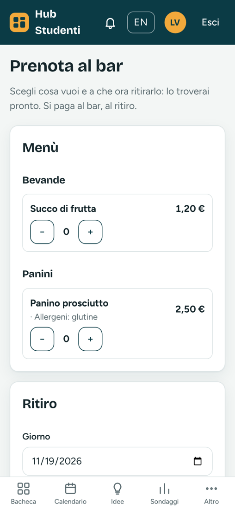

Un posto solo per tutto quello che succede a scuola.
Eventi, calendario di classe, appunti condivisi, sondaggi, richieste di assemblea e disponibilità delle macchinette: fatto dagli studenti, per gli studenti. Gratuito e open source (AGPL-3.0).
Apri il codice sorgenteProponilo alla tua scuolaCosa fa
Calendario
Viste mese, settimana, giorno e agenda come Google Calendar. Verifiche e compiti per classe; importa .ics, esporta o iscriviti dal calendario del telefono.
Macchinette
Cosa c'è dentro, quanto costa e se è finito, segnalato dagli studenti.
Assemblee di classe
Chiedi l'assemblea: la scuola vede le regole (preavviso, ore, al mese) e risponde nell'app.
Prenotazione bar
Per le scuole con bar (alberghieri). Si paga al ritiro. Si attiva solo su richiesta e-mail della scuola.
Campanella
Segui idee, sondaggi e sezioni. Le novità arrivano nella campanella e via e-mail solo se vuoi.
Italiano e inglese
Interfaccia, e-mail e notifiche in due lingue.
Idee, sondaggi, appunti, libri
Proponi idee, vota, condividi appunti con foto, dai una seconda vita ai libri.
Funziona sul telefono
Pensato per il mobile, installabile dal browser, senza app store.
Schermate (dati di esempio)



Per le scuole
Ogni scuola ha la sua comunità con un codice d'invito. Rappresentanti o personale gestiscono i contenuti; calendario, macchinette e assemblee sono attivi di default; il modulo bar è facoltativo e lo attiviamo noi dopo la richiesta e-mail della scuola. I dati restano in UE. Non chiediamo mai le password del registro (Classeviva).
Privacy prima di tutto
Dati minimi, solo dai 14 anni, esportazione e cancellazione dell'account con un clic, niente pubblicità né tracker, nessuna richiesta a servizi esterni dalle pagine. I documenti legali sono bozze e saranno rivisti con un professionista della protezione dei dati e con il DPO di ogni scuola prima del lancio.
Stato
Prototipo funzionante con test automatici. Non ancora usato da scuole reali; pilota in programma. Nome del progetto, dominio e hosting sono ancora da decidere.
Partecipa
Cerchiamo sviluppatori, traduttori, tester su telefono e ambasciatori di istituto. Apri una issue o una pull request su GitHub; l'e-mail del progetto sarà pubblicata qui quando esisterà.
GitHub